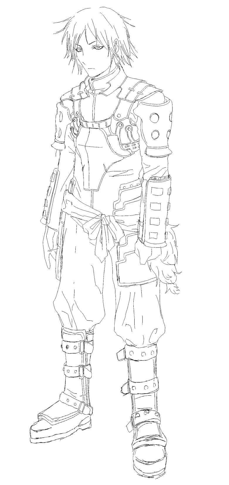
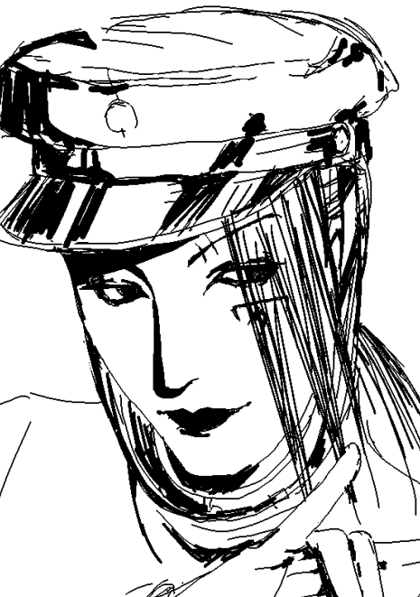

Tried to make a design of Shinra from Ikaruga before the events of the actual game take place, super loosely based on this concept art by Yasushi Suzuki when Shinra was still piloting the Shirasagi. I want to attempt to draw some better fanart now that a few years have passed. I replayed Ikaruga with a friend the other day and I got so excited talking about it I almost started crying (from joy) and had to relax. I also replayed Radiant Silvergun and relistened to the OST (Ikaruga's prequel). Since I was alone that time, I actually started crying (from joy). For all Final Fantasy Tactics fans, Hitoshi Sakimoto also composed the Radiant Silvergun OST, so please check it out. I forgot how much these games meant to me because I haven't thought about them in around 5 years. I'm horrible at them, but I really can't describe how great the visuals, OST, and overarching narrative of the games are... Also, Kotobukiya is opening preorders for the Ikaruga and Ginkei garage kits again. I wanted them so badly but they were out of stock back then. I want to try my hand at it, but apparently they are notoriously difficult. I'll save it for a rainy day.

Doodle of Amano Tonbimaru from Guruguru Eigakan. I'm planning to cosplay either him or Kaneda Riku from Litchi Hikari Club. I bought a second-hand gakuran and I'm going to replace the buttons with showa-era buttons to make it look a little more genuine. I also got an internship with my professor's journal but um. It seems very casual. The idea of going to his house for a meeting is very strange to me. It's with 2 other people though so maybe it won't be awkward (I don't want to be the first one to show up).